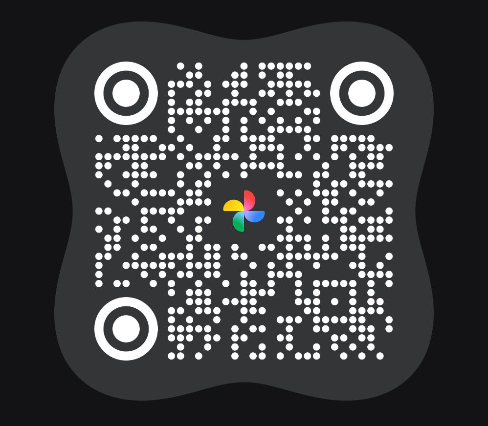

Álbum da Festa
Compartilhe momentos especiais
dessa celebração.
Acesse todas as fotos da festa no nosso álbum exclusivo do Google Fotos. Você pode adicionar suas próprias fotos e reviver cada momento.

Escaneie o QR Code com a câmera do celular ou clique no botão acima.
Acesse o álbum compartilhado e veja todos os momentos da festa.
Adicione suas fotos O botão “Adicionar fotos” fica no centro inferior da tela. Toque no ícone de imagem com sinal de “+” para acessar a galeria e adicionar novas fotos. — Guarde suas memórias para sempre!
Suas fotos ficarão visíveis para todos os convidados.